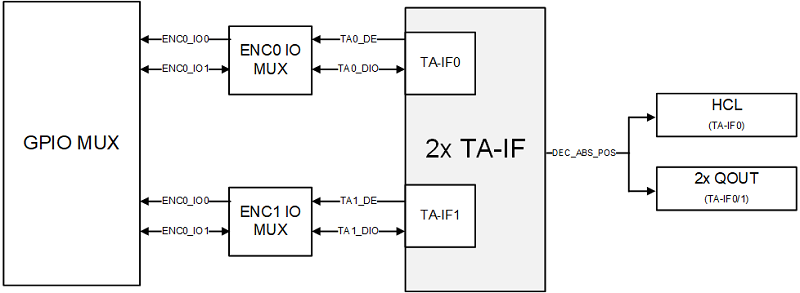

TA Interface (TA_IF)
16 Aug 2024
Read time: 1 minute(s)
TFormat / AFormat Absolute Encoder Interface (TA-AEI)，简称 TA_IF，即 TA 绝对值编码器接口，主要用作 Master，控制 T-Format/ A-Format 接口的绝对值编码器。Tamgawa 的编码器接口格式对应为 T-Format，Nikon 编码器接口格式对应为 A-Format。
特性说明
- 支持 T-Format 和 A-Format（A-Format 只支持点对点模式）。
- 波特率支持 2.5 Mbps/ 4 Mbps/ 6.6 Mbps/ 8 Mbps/ 16 Mbps。
- 支持编码器绝对值位置数据解码。
原理框图

外部接口说明如下：
-
TA-DE：用于驱动外部的 RS485 芯片，自动切换 Dirver/Reception 状态。
-
TA-DIO：输入输出数据信号。
实时控制外设互联图

TA_IF 输入输出管脚
如TA_IF 实时控制外设互联所示，TA_IF 的输入输出管脚信号 TA_DE 和 TA_DIO 复用于 ENC_IO_MUX 模块，需通过 SYS_CFG 配置寄存器 ENCODER_CFG 进行选择。其中对应关系为：
-
ENC_IO0 对应 TA_DE。
-
ENC_IO1 对应 TA_DIO。
-
ENC_IO2 无对应 TA_IF 模块的信号，无需使用。
TA_IF 位置数据
如TA_IF 实时控制外设互联所示，TA_IF 的解析所得的位置数据，可以传输到 HCL 以及 QOUT 模块，分别用于硬件电流环的电角度计算和 QOUT 的任意分频输出。